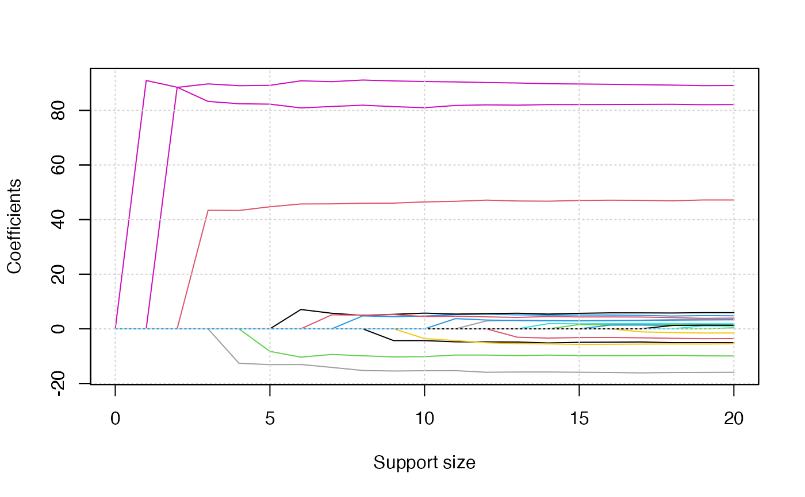
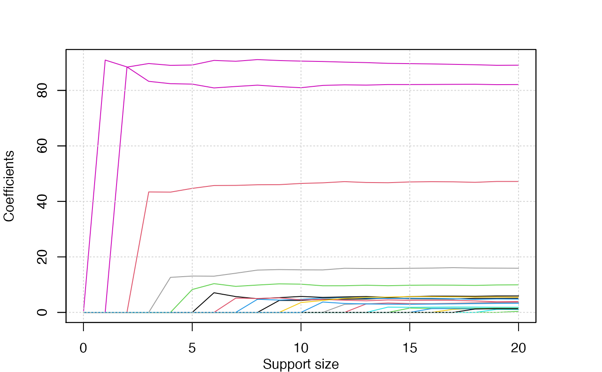
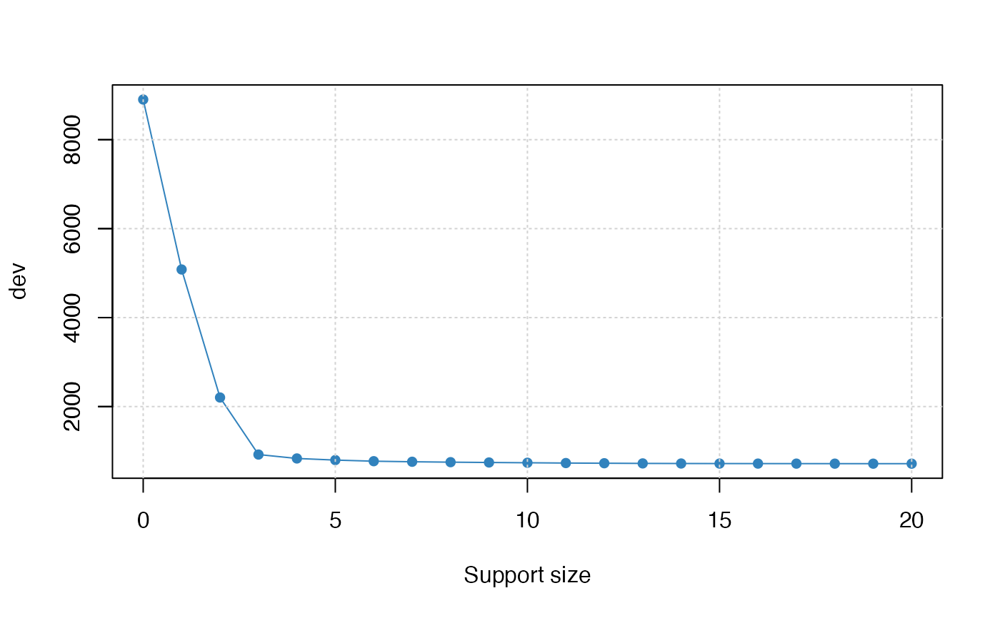
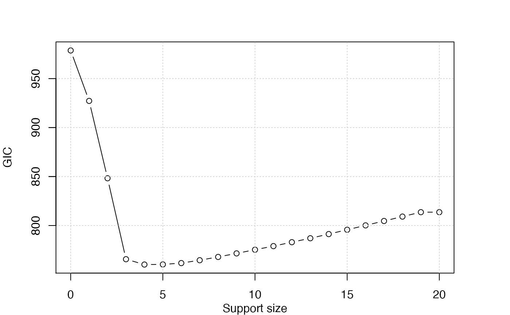

Produces a coefficient/deviance/tuning-value plot for a fitted "abess" object.
# S3 method for abess plot( x, type = c("coef", "l2norm", "dev", "dev.ratio", "tune"), label = FALSE, ... )
| x | A " |
|---|---|
| type | The type of terms to be plot in the y-axis.
One of the following: |
| label | A logical value.
If |
| ... | Other graphical parameters to plot |
If family = "mgaussian" or family = "multinomial",
a coefficient plot is produced for
each dimension of multivariate response.
dataset <- generate.data(100, 20, 3) abess_fit <- abess(dataset[["x"]], dataset[["y"]]) plot(abess_fit)